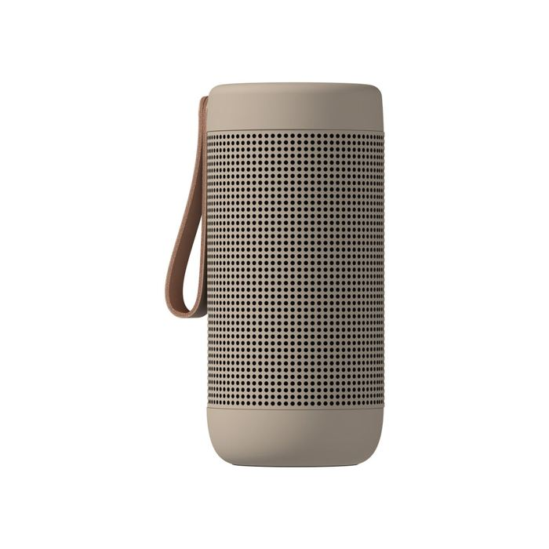

1
Sonos Play
8 146 kr för två, med nätadaptrar
Står på laddbasen hemma och behåller stereoparet. Kopplas ihop via Bluetooth även utan wifi.
24 h batteri · IP67 · wifi och Bluetooth
Obs: Nätadapter på 45 W köps till.
Vita, cylinderformade och trådlösa. Alla fyra kan kopplas ihop två och två.
Vårt val: två vita Sonos Play. De står på laddbasen hemma och behåller stereoparet.
8 146 kr för två, med nätadaptrar
Står på laddbasen hemma och behåller stereoparet. Kopplas ihop via Bluetooth även utan wifi.
24 h batteri · IP67 · wifi och Bluetooth
Obs: Nätadapter på 45 W köps till.

ca 2 800 kr för två
Dansk design. Paret återansluter av sig självt när båda slås på.
30 h batteri · IPX5 · Bluetooth · trådlös laddning
Obs: Vit finns bara som restlager. I dag säljs svart och benvit, som på bilden.

ca 1 980 kr för två
Tålig och prisvärd, med stereo via JBL-appen.
14 h batteri · IP68 · Bluetooth
Obs: Oklart om paret ligger kvar efter avstängning. Sportigare design.

ca 1 620 kr för två
Liten mjukvit cylinder, 10 cm hög.
30 h batteri · IPX5 · Bluetooth · trådlös laddning
Obs: Oklart om paret ligger kvar efter avstängning.
| Sonos Play | Kreafunk aCOUSTIC | JBL Flip 7 | Kreafunk Karl | |
|---|---|---|---|---|
| Vit | Ja | Restlager | Ja | Ja |
| Form | Oval cylinder | Cylinder | Cylinder | Liten cylinder |
| Batteri | 24 h | 30 h | 14 h | 30 h |
| Håller ihop hemma | Ja, på basen | Ja | Oklart | Oklart |
| Ihop utan wifi | Ja | Ja | Ja | Ja |
| Tål vatten | IP67 | IPX5 | IP68 | IPX5 |
| Pris för två | 8 146 kr | ca 2 800 kr | ca 1 980 kr | ca 1 620 kr |